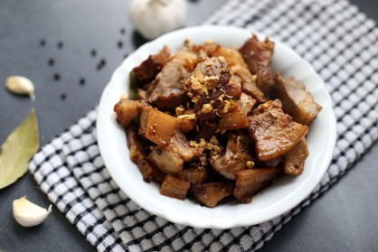
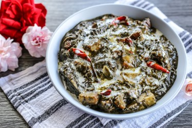
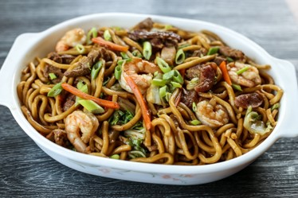

A sizzling dish is made from chopped pork parts (usually the face and ears), seasoned with calamansi, onions, and chili, and often served on a sizzling plate. It's beloved for its combination of crispy, chewy, and tangy flavors. Originated in Pampanga and can be found in different restaurants.

Adobo is considered the unofficial national dish of the Philippines. It consists of pork, chicken, or a combination, marinated in vinegar, soy sauce, garlic, bay leaves, and peppercorns, then slow-cooked to tender perfection. Can be found at any places like local restaurants in Luzon.
Laing is a Bicolano dish made from dried taro leaves cooked in coconut milk and often spiced with chili. It’s creamy, flavorful, and can be very spicy. Can be found at restaurants in Bicol and Albay
Pancit refers to various noodle dishes, and Pancit Habhab from Quezon Province is a specialty where sautéed noodles with vegetables and pork are served on a banana leaf and eaten without utensils.
A crunchy, deep-fried pork belly dish from Ilocos, Bagnet is similar to lechon kawali but with a crispier skin. It is often served with bagoong (fermented fish paste) or sukang Iloko (Ilocos vinegar). The historic city of Vigan is the best place to try Bagnet, with places like Café Leona or Lilong and Lilang Restaurant offering delicious versions.